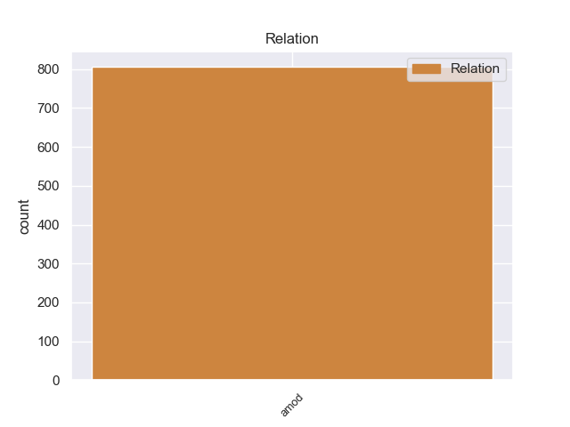
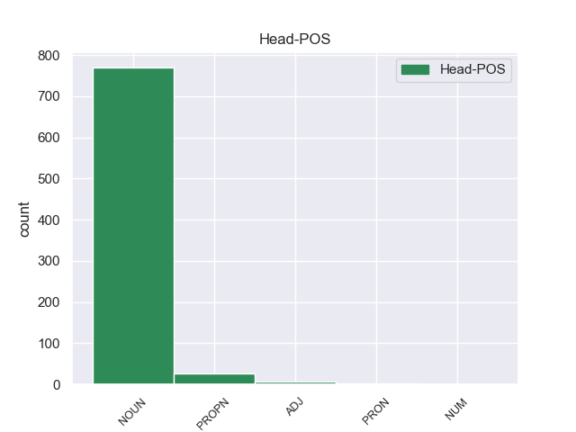
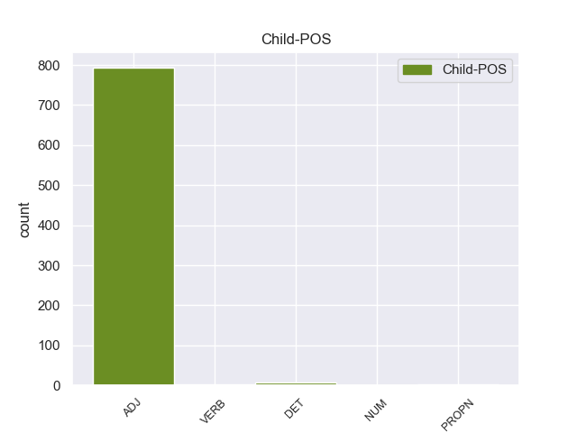

Distribution of features within this leaf



Agreement Rules sorted by frequency.
- When the dependent token is the adjectival modifier(amod) of the head token,
1 Протагонист _ _ _ _ 0 _ _ _
2 игры _ _ _ _ 0 _ _ _
3 -- _ _ _ _ 0 _ _ _
4 Эш _ _ _ _ 0 _ _ _
5 , _ _ _ _ 0 _ _ _
6 персонаж _ _ _ _ 0 _ _ _
7 трилогии _ _ _ _ 0 _ _ _
8 Зловещие зловещий ADJ JJL Case=Nom|Degree=Pos|Number=Plur 9 amod _ _
9 мертвецы мертвец NOUN NN Animacy=Anim|Case=Nom|Gender=Masc|Number=Plur 0 _ _ _
10 . _ _ _ _ 0 _ _ _
Disagree Examples:
1 В _ _ _ _ 0 _ _ _
2 1920 _ _ _ _ 0 _ _ _
3 - _ _ _ _ 0 _ _ _
4 1940-х _ _ _ _ 0 _ _ _
5 Сноу _ _ _ _ 0 _ _ _
6 опубликовал _ _ _ _ 0 _ _ _
7 пять _ _ _ _ 0 _ _ _
8 своих _ _ _ _ 0 _ _ _
9 книг _ _ _ _ 0 _ _ _
10 в _ _ _ _ 0 _ _ _
11 журнале _ _ _ _ 0 _ _ _
12 мистики _ _ _ _ 0 _ _ _
13 и _ _ _ _ 0 _ _ _
14 саспенса _ _ _ _ 0 _ _ _
15 Weird _ _ _ _ 0 _ _ _
16 Tales _ _ _ _ 0 _ _ _
17 : _ _ _ _ 0 _ _ _
18 `` _ _ _ _ 0 _ _ _
19 Ночные ночной ADJ JJL Case=Nom|Degree=Pos|Number=Plur 20 amod _ _
20 Крылья крыло NOUN NN Animacy=Inan|Case=Nom|Gender=Neut|Number=Sing 0 _ _ _
21 '' _ _ _ _ 0 _ _ _
22 ( _ _ _ _ 0 _ _ _
23 1927 _ _ _ _ 0 _ _ _
24 ) _ _ _ _ 0 _ _ _
25 , _ _ _ _ 0 _ _ _
26 `` _ _ _ _ 0 _ _ _
27 Яд _ _ _ _ 0 _ _ _
28 '' _ _ _ _ 0 _ _ _
29 ( _ _ _ _ 0 _ _ _
30 1928 _ _ _ _ 0 _ _ _
31 ) _ _ _ _ 0 _ _ _
32 , _ _ _ _ 0 _ _ _
33 `` _ _ _ _ 0 _ _ _
34 Второе _ _ _ _ 0 _ _ _
35 детство _ _ _ _ 0 _ _ _
36 '' _ _ _ _ 0 _ _ _
37 ( _ _ _ _ 0 _ _ _
38 1945 _ _ _ _ 0 _ _ _
39 ) _ _ _ _ 0 _ _ _
40 , _ _ _ _ 0 _ _ _
41 `` _ _ _ _ 0 _ _ _
42 Семя _ _ _ _ 0 _ _ _
43 '' _ _ _ _ 0 _ _ _
44 ( _ _ _ _ 0 _ _ _
45 1946 _ _ _ _ 0 _ _ _
46 ) _ _ _ _ 0 _ _ _
47 и _ _ _ _ 0 _ _ _
48 `` _ _ _ _ 0 _ _ _
49 Полночь _ _ _ _ 0 _ _ _
50 '' _ _ _ _ 0 _ _ _
51 ( _ _ _ _ 0 _ _ _
52 1946 _ _ _ _ 0 _ _ _
53 ) _ _ _ _ 0 _ _ _
54 . _ _ _ _ 0 _ _ _
1 Стрелы _ _ _ _ 0 _ _ _
2 указывают _ _ _ _ 0 _ _ _
3 на _ _ _ _ 0 _ _ _
4 две _ _ _ _ 0 _ _ _
5 транспортные _ _ _ _ 0 _ _ _
6 артерии _ _ _ _ 0 _ _ _
7 , _ _ _ _ 0 _ _ _
8 проходящие _ _ _ _ 0 _ _ _
9 по _ _ _ _ 0 _ _ _
10 территории _ _ _ _ 0 _ _ _
11 муниципального _ _ _ _ 0 _ _ _
12 образования _ _ _ _ 0 _ _ _
13 , _ _ _ _ 0 _ _ _
14 проспекты проспект NOUN NN Animacy=Inan|Case=Acc|Gender=Masc|Number=Plur 0 _ _ _
15 Ленинский ленинский ADJ JJL Case=Nom|Degree=Pos|Gender=Masc|Number=Sing 14 amod _ _
16 и _ _ _ _ 0 _ _ _
17 Вернадского _ _ _ _ 0 _ _ _
18 , _ _ _ _ 0 _ _ _
19 по _ _ _ _ 0 _ _ _
20 которым _ _ _ _ 0 _ _ _
21 в _ _ _ _ 0 _ _ _
22 древние _ _ _ _ 0 _ _ _
23 времена _ _ _ _ 0 _ _ _
24 осуществлялась _ _ _ _ 0 _ _ _
25 связь _ _ _ _ 0 _ _ _
26 с _ _ _ _ 0 _ _ _
27 Золотой _ _ _ _ 0 _ _ _
28 Ордой _ _ _ _ 0 _ _ _
29 . _ _ _ _ 0 _ _ _
1 В _ _ _ _ 0 _ _ _
2 1995-1996 1995-1996 ADJ ORD Case=Loc|Degree=Pos|Gender=Masc|Number=Sing 3 amod _ _
3 годах год NOUN NN Animacy=Inan|Case=Loc|Gender=Masc|Number=Plur 0 _ _ _
4 вместе _ _ _ _ 0 _ _ _
5 с _ _ _ _ 0 _ _ _
6 Леонардо _ _ _ _ 0 _ _ _
7 Ди _ _ _ _ 0 _ _ _
8 Каприо _ _ _ _ 0 _ _ _
9 и _ _ _ _ 0 _ _ _
10 Тоби _ _ _ _ 0 _ _ _
11 Магуайром _ _ _ _ 0 _ _ _
12 Конноли _ _ _ _ 0 _ _ _
13 снялся _ _ _ _ 0 _ _ _
14 в _ _ _ _ 0 _ _ _
15 малобюджетном _ _ _ _ 0 _ _ _
16 ч _ _ _ _ 0 _ _ _
17 / _ _ _ _ 0 _ _ _
18 б _ _ _ _ 0 _ _ _
19 фильме _ _ _ _ 0 _ _ _
20 `` _ _ _ _ 0 _ _ _
21 Донс _ _ _ _ 0 _ _ _
22 Плам _ _ _ _ 0 _ _ _
23 '' _ _ _ _ 0 _ _ _
24 . _ _ _ _ 0 _ _ _
1 Образовано _ _ _ _ 0 _ _ _
2 в _ _ _ _ 0 _ _ _
3 результате _ _ _ _ 0 _ _ _
4 проведения _ _ _ _ 0 _ _ _
5 муниципальной _ _ _ _ 0 _ _ _
6 реформы _ _ _ _ 0 _ _ _
7 в _ _ _ _ 0 _ _ _
8 2005 _ _ _ _ 0 _ _ _
9 году _ _ _ _ 0 _ _ _
10 , _ _ _ _ 0 _ _ _
11 путём _ _ _ _ 0 _ _ _
12 слияния _ _ _ _ 0 _ _ _
13 дореформенных _ _ _ _ 0 _ _ _
14 Каменского каменский ADJ JJL Case=Gen|Degree=Pos|Gender=Masc|Number=Sing 17 amod _ _
15 и _ _ _ _ 0 _ _ _
16 Нижневского _ _ _ _ 0 _ _ _
17 сельсоветов сельсовет NOUN NN Animacy=Inan|Case=Gen|Gender=Masc|Number=Plur 0 _ _ _
18 . _ _ _ _ 0 _ _ _
1 В _ _ _ _ 0 _ _ _
2 1994 1994 ADJ ORD Case=Loc|Degree=Pos|Gender=Masc|Number=Sing 5 amod _ _
3 -- _ _ _ _ 0 _ _ _
4 1996 _ _ _ _ 0 _ _ _
5 годах год NOUN NN Animacy=Inan|Case=Loc|Gender=Masc|Number=Plur 0 _ _ _
6 служил _ _ _ _ 0 _ _ _
7 на _ _ _ _ 0 _ _ _
8 офицерских _ _ _ _ 0 _ _ _
9 должностях _ _ _ _ 0 _ _ _
10 в _ _ _ _ 0 _ _ _
11 278-й _ _ _ _ 0 _ _ _
12 гвардейской _ _ _ _ 0 _ _ _
13 реактивной _ _ _ _ 0 _ _ _
14 артиллерийской _ _ _ _ 0 _ _ _
15 бригаде _ _ _ _ 0 _ _ _
16 , _ _ _ _ 0 _ _ _
17 дислоцированной _ _ _ _ 0 _ _ _
18 в _ _ _ _ 0 _ _ _
19 Твери _ _ _ _ 0 _ _ _
20 . _ _ _ _ 0 _ _ _